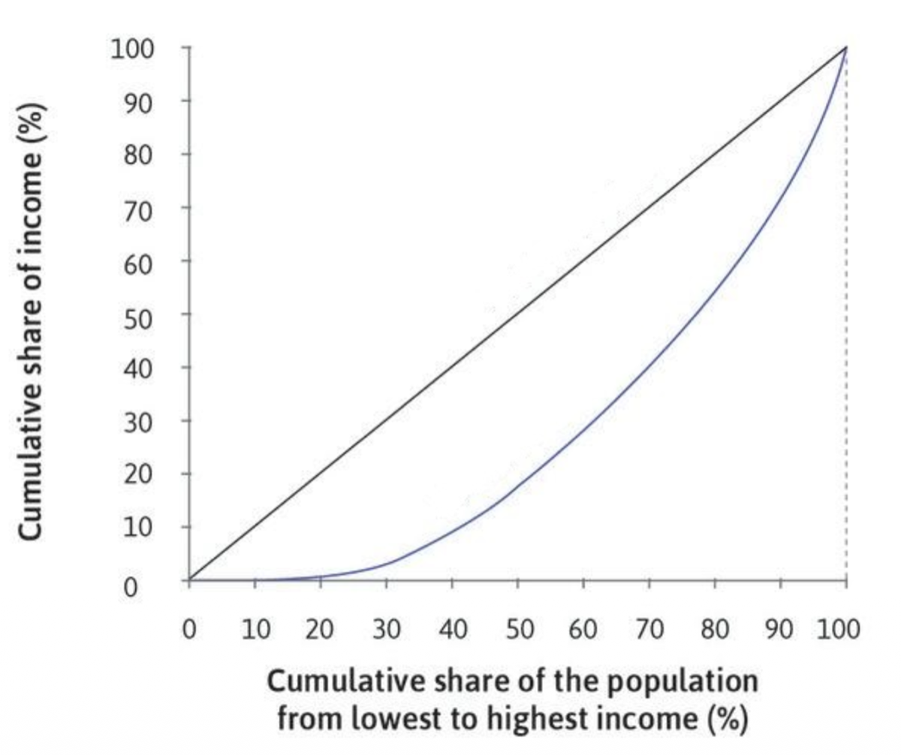
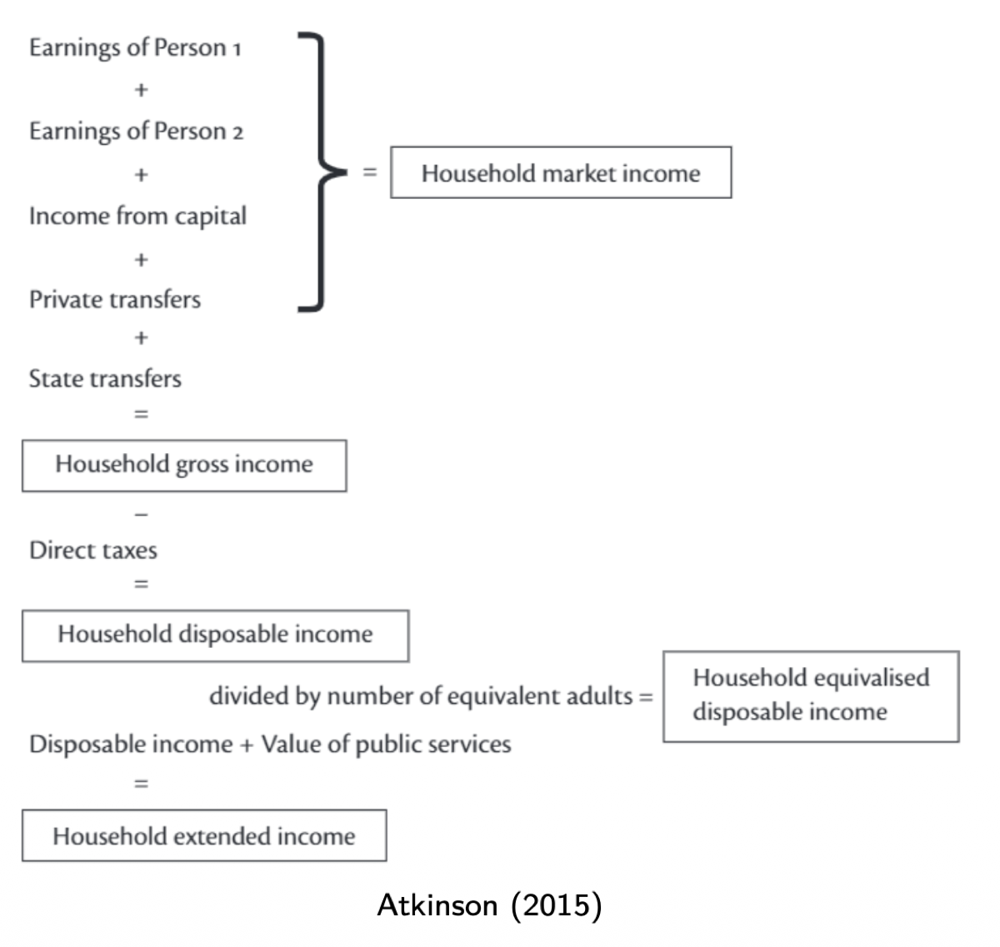
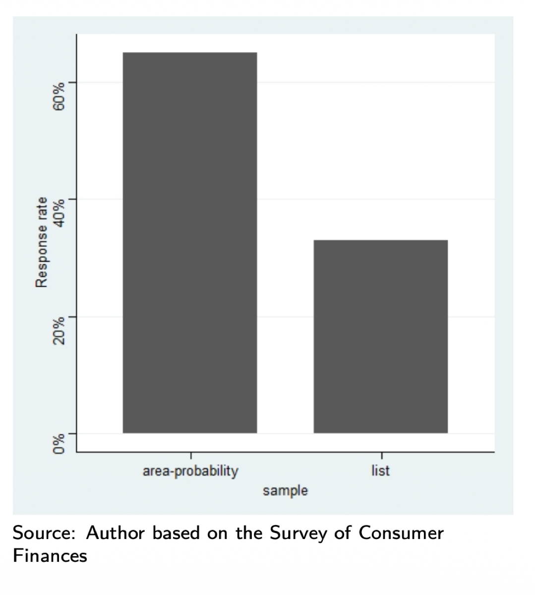
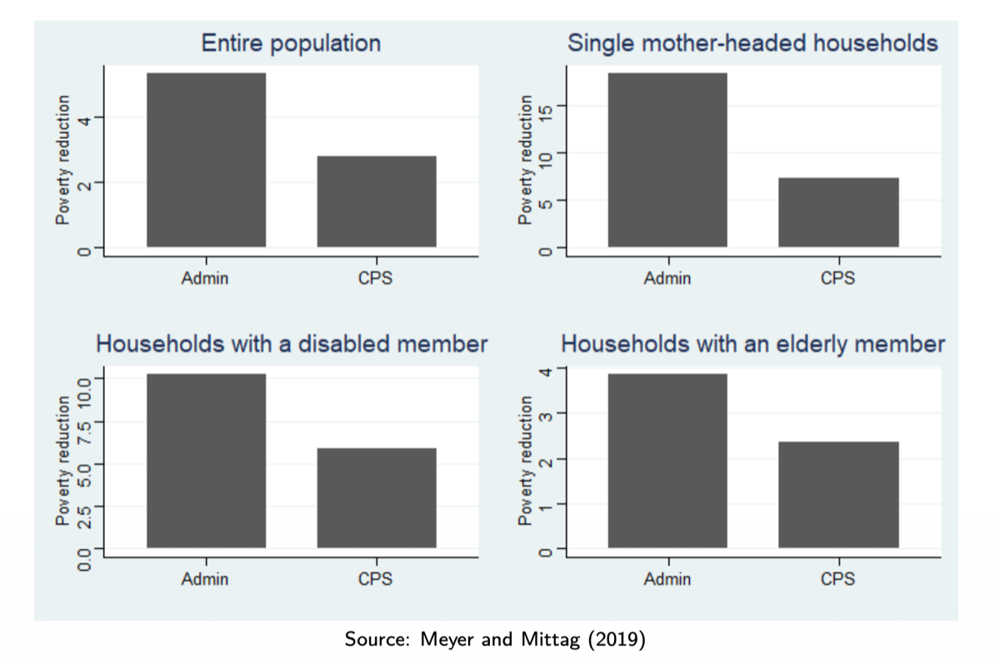

2.2 — Measuring Inequality
Chapter 2: Inequality
Inequality Indices
Once we agree on the axioms that a good inequality measure should satisfy, we can construct specific indices. Each index captures different aspects of the income distribution. Here are the main families:
Decile Ratios
The simplest way to measure inequality is to compare specific points in the income distribution. Decile ratios take the income at one percentile and divide it by the income at another:
| Ratio | What It Compares | What It Captures |
|---|---|---|
| 90/10 | Income at 90th percentile ÷ Income at 10th percentile | Overall spread: how much more the rich earn compared to the poor |
| 90/50 | Income at 90th percentile ÷ Median income | Upper-half inequality: how stretched the top is relative to the middle |
| 80/20 | Income at 80th percentile ÷ Income at 20th percentile | A less extreme version of 90/10, excluding the very tails |
Decile ratios are easy to understand and communicate (e.g., "the top earner makes 9 times what the bottom earner makes"), but they only look at two points in the distribution and ignore everything in between.
The Gini Coefficient
The Gini coefficient is the most widely used inequality measure. It compares every pair of incomes in the population:
$G = \frac{\sum_{i=1}^{n} \sum_{j=1}^{n} |y_i - y_j|}{2n^2 \bar{y}}$
The numerator sums the absolute differences between every pair of incomes $(i, j)$. The denominator normalizes this by the number of pairs ($n^2$) and the mean income ($\bar{y}$), so the result is a number between 0 (perfect equality) and 1 (maximum inequality).
Intuitively, the Gini coefficient asks: "If I pick two people at random, how different are their incomes, on average, relative to the mean?" A Gini of 0.30 means that the expected difference between two random individuals is 60% of the mean income (since the formula divides by $2\bar{y}$).
Other Indices
Atkinson Index
Incorporates an explicit inequality aversion parameter $\varepsilon$. The higher $\varepsilon$, the more weight the index places on income transfers at the bottom of the distribution. This makes it more sensitive to poverty than the Gini, and directly linked to social welfare theory.
Generalized Entropy (GE) Measures
A family of indices that includes the Theil index (GE(1)) and the Mean Log Deviation (GE(0)). Their key advantage is that they are perfectly decomposable: total inequality can be split exactly into between-group and within-group components (Axiom 4).
The Lorenz Curve

The Lorenz curve is the standard way to visualize income distribution in a society. It works by plotting two things against each other:
- X-axis: Cumulative share of the population, ranked from lowest to highest income (0% to 100%)
- Y-axis: Cumulative share of total income held by that population group
Two lines appear on the graph:
Line of Perfect Equality (Diagonal)
If income were perfectly distributed, the bottom 10% would hold exactly 10% of income, the bottom 50% would hold 50%, and so on. This gives a straight 45° diagonal line. It serves as a benchmark — the closer the Lorenz curve is to this line, the more equal the society.
Lorenz Curve (Blue curve)
The actual distribution always curves below the diagonal (unless there is perfect equality). When the curve is far below the diagonal, it means the poorest members hold a very small share of total income. For example, if the curve passes through the point (60, 30), it means the poorest 60% of the population holds only 30% of total income.
The Gini coefficient is directly derived from the Lorenz curve. It equals the area between the diagonal and the Lorenz curve, divided by the total area below the diagonal:
$\text{Gini} = \frac{\text{Area between diagonal and Lorenz curve}}{\text{Total area below diagonal}} = \frac{A}{A + B}$
If the Lorenz curve overlaps the diagonal (perfect equality), the area is 0 → Gini = 0. If the curve hugs the bottom and right edges (one person has everything), the area is maximal → Gini approaches 1.
Measuring Income
Income seems like a simple concept, but measuring it correctly is one of the hardest problems in empirical public finance. The choices we make about how to measure income can completely change our conclusions about inequality.
Why measure income? Because it is the primary indicator of whether an individual has access to a minimum level of resources — it reflects purchasing power, economic security, and standard of living.
Challenges:
- Quality of reporting — People underreport their income in surveys (especially the very rich and those with informal income).
- Household vs. individual income — Should we measure the income of individuals or households? Households pool resources, but household members may not share equally.
- Transitory vs. permanent income — A student may have very low income this year but high expected lifetime income. A one-year snapshot can be misleading.
- Variation in price levels — €1,000/month buys very different amounts in Paris vs. rural Poland. We need to adjust for purchasing power.
- Different income concepts — Which income we measure matters enormously. The course distinguishes four:

| Concept | What It Includes | Formula |
|---|---|---|
| Market Income | Earnings (all persons) + capital income + private transfers | What you earn from the economy, before any government involvement |
| Gross Income | Market income + state transfers (pensions, unemployment benefits, social aid) | Market income + government transfers |
| Disposable Income | Gross income − direct taxes (income tax, social contributions) | What you actually have to spend |
| Extended Income | Disposable income + value of public services (education, health, infrastructure) | The most complete picture of living standards |
An additional adjustment is equivalization: dividing household disposable income by the number of "equivalent adults" to account for household size. A household of 4 with €4,000/month is not as well off as a single person with €4,000/month, because costs are shared but not proportionally (a larger house costs more, but not 4× more).
Data Challenges: Surveys vs. Administrative Data

Survey Sampling Problem
Surveys like the US Survey of Consumer Finances use two types of samples. The standard area-probability sample (random geographic selection) achieves a ~65-70% response rate. But the list sample — specifically targeting wealthy households — gets only ~30-35% response rates. The richest people are hardest to survey, which means standard surveys systematically underestimate top-end wealth and income.

Admin vs. Survey Data
When measuring the poverty-reducing impact of public transfers, administrative data (from tax records, benefit programs) consistently shows larger effects than survey data (CPS). This gap is especially stark for vulnerable groups like single mothers and disabled households, because respondents often forget or underreport government benefits received.
When discussing inequality data on an exam, always acknowledge measurement limitations. Mention whether the data uses surveys or administrative records, note the income concept (market vs. disposable), and flag potential biases (underreporting by the rich, non-response, transitory income fluctuations).
Beyond Income: Wealth, Consumption & Opportunities
💎 Wealth
Why measure it? Wealth (assets minus debts) is even more concentrated than income. It captures longrun economic power, security, and intergenerational advantage.
Challenges: Wealth is extremely hard to measure. The very rich engage in tax evasion and use complex financial structures to hide assets. What should be "included" (pension rights? housing?) and how to value illiquid assets are major questions.
🛒 Consumption
Why measure it? Consumption may better reflect living standards than income, because people smooth their consumption over time (borrowing when young, saving when old). It indicates whether someone can attain a given standard of living.
Challenges: Consumption vs. consumption expenditure (owning a house = consumption but no expenditure), quality differences, micro-macro data mismatches, and household vs. personal consumption.
🎯 Opportunities
Why measure it? Many philosophers and economists argue we should care about equality of opportunity rather than (or in addition to) equality of outcomes. The key question: does your economic fate depend on your talent and effort, or on your parents' income?
Challenges: Defining and measuring "opportunity" requires long-run panel data (tracking the same people over decades). It's also possible to measure inequality in education, health, or through composite indicators.